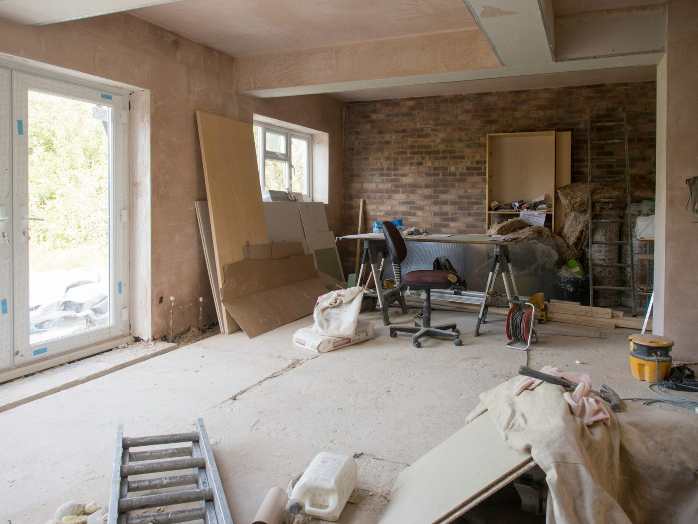

Come una società di fix & flip ha smesso di perdere opportunità immobiliari costruendo una piattaforma di analisi e monitoraggio su misura.

Rebuyer è una società specializzata nell'acquisto, ristrutturazione e rivendita di immobili residenziali. Il loro modello di business vive di velocità e precisione: identificare l'immobile giusto prima della concorrenza, valutarlo correttamente in tempi rapidi, presentare un'offerta strutturata e credibile.
Prima di lavorare con Altalogik, il flusso operativo era interamente manuale. Analizzare un'opportunità richiedeva 90-120 minuti per immobile. Le aste venivano monitorate su 2-3 portali con controllo manuale quotidiano. Le opportunità perse per ritardo erano stimate in 3-5 al mese. I preventivi contenevano errori rilevati spesso solo dopo la firma.
"Sapevamo che le aste erano il canale migliore. Ma monitorarle manualmente era impossibile da fare bene. O ci dedicavi una persona full time, o ti perdevi le cose."
Altalogik ha sviluppato una piattaforma su misura per il flusso operativo di Rebuyer, composta da cinque moduli integrati.
Ricerca e monitoraggio aggregato: un'unica interfaccia aggrega in tempo reale i principali portali immobiliari italiani, con filtri configurati sui criteri esatti di Rebuyer: zona, tipologia, fascia di prezzo, stato dell'immobile.
Monitoraggio aste h24: il sistema monitora continuamente i portali delle aste giudiziarie e private. Appena viene pubblicato un immobile nei criteri configurati, Rebuyer riceve una notifica email entro secondi dalla pubblicazione.
Analisi automatica dell'opportunità: basta incollare il link dell'annuncio. In meno di un minuto il sistema restituisce prezzo al metro quadro, confronto con i valori medi della zona, stima del valore post-ristrutturazione, costo stimato dell'intervento e margine potenziale netto.
Forecasting del profitto: per ogni operazione in trattativa, il modulo calcola il profitto potenziale stimato inserendo prezzo di acquisto, costi, tempistiche, prezzo di vendita atteso e oneri fiscali.
Generazione preventivi automatica: la piattaforma genera preventivi strutturati in modo completamente automatico a partire dai dati dell'operazione, eliminando errori di calcolo e voci dimenticate.
tempo medio di analisi per opportunità: da 90-120 minuti a 4 minuti
opportunità aste intercettate al mese: da variabile a +8 in media
errori nei preventivi: zero dall'attivazione della piattaforma
"Prima quella cosa non sarebbe mai successa. O non l'avremmo vista, o l'avremmo vista troppo tardi."